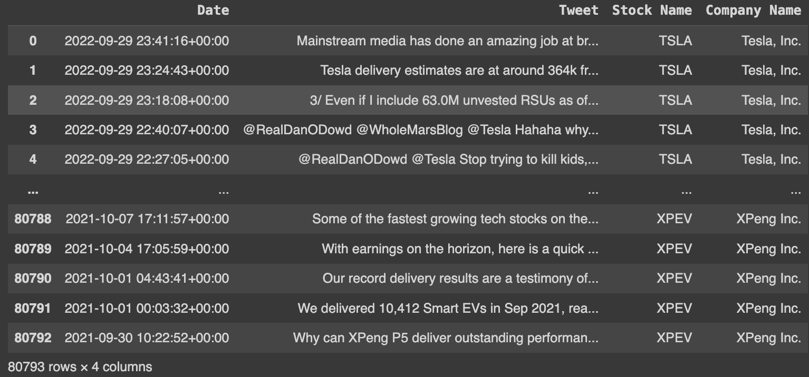
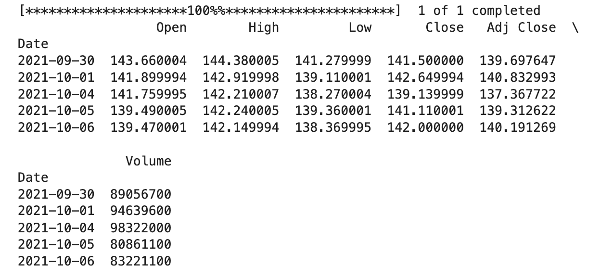
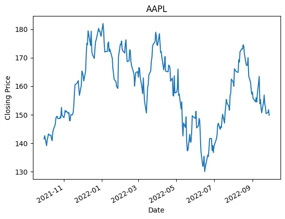
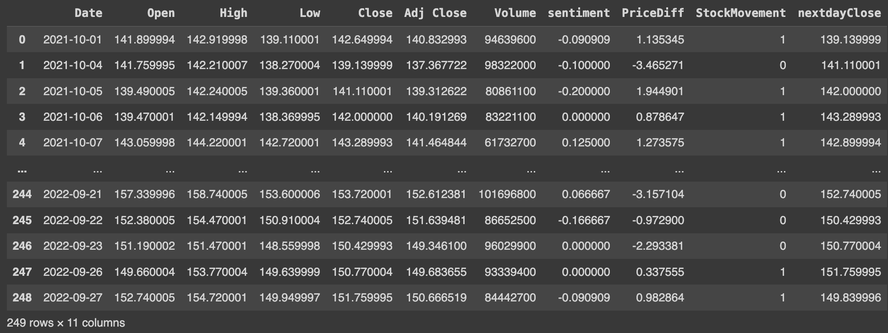
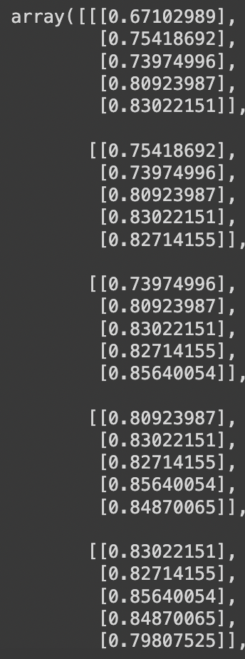
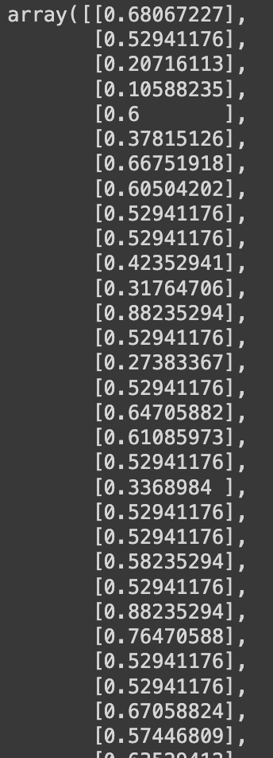
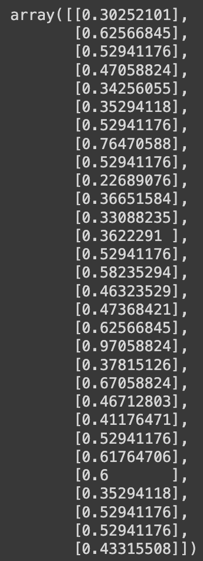
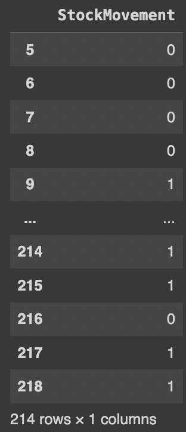
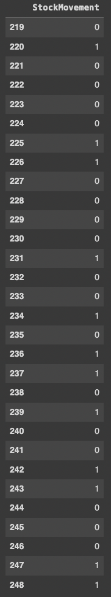

Data
Data
https://www.kaggle.com/datasets/equinxx/stock-tweets-for-sentiment-analysis-and-predictiondf
Raw Dataframe
Stocks price yfinance api
 merged_df
The raw dataframe and the data from api collected for APPL are merged to form the merged_df. The merging is on date feature with frequency set to daily. The tweets related to APPL is also passed through the finetuned BERT sentiment classifier to find sentiment and averaged to find the score for a particular date. The stock market movement is the difference between the current closing price and previous day close price and set to 1 if it is positive and 0 if negative or 0.
CODE:
https://github.com/Shouvik-7/stock_market_movement_predictor/blob/main/DataCleanPrepfortwitterstocksentiment.ipynbDATA:
https://github.com/Shouvik-7/stock_market_movement_predictor/blob/main/merged_df.csvData Preparation for Stock Market Movement prdiction Using LSTM
X_train_c
X_train_c shape: (214,5,1)
X_test_c
X_test_c shape: (30,5,1)
The X_train_c comprises of the closing price of the stock. The prices are normalized using min max scaler. The previous 5 days closing price of the stock is used to form a window.
X_train_s
X_train_s shape: (214,1)
X_test_s
X_test_s shape: (30,1)
The X_train_s comprises of the sentiments of the stock. The sentiments are normalized. It is then divided into train test split.
y_train
y_test
The stock movement describes the whether the closing price of the stock has increase denoted by 1 or decreased denoted by 0.